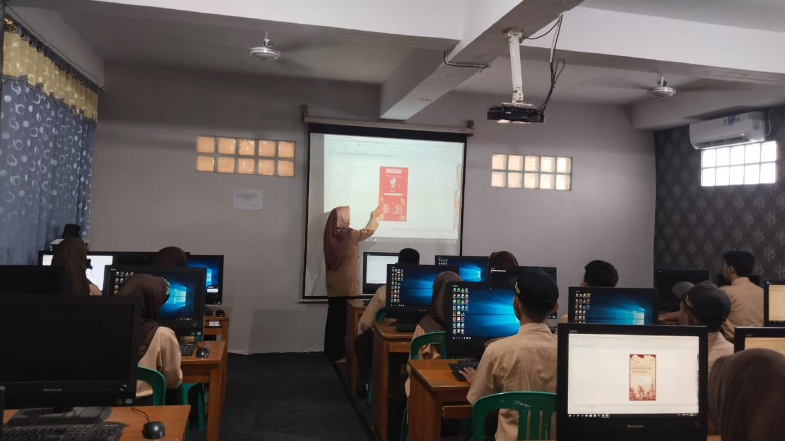
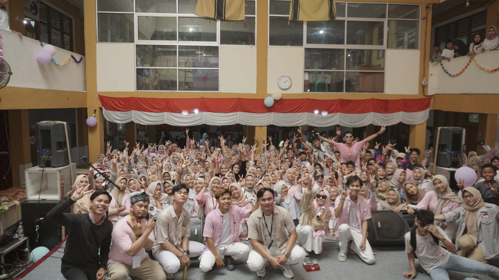

Fasilitas Sekolah

Laboratorium Komputer
Dilengkapi dengan perangkat keras dan lunak terbaru untuk mendukung pembelajaran.

Studio
Studio tempat untuk membahas acara, podcast dan rapat-rapat.

Acara
Acara yang diselenggarakan oleh anggota OSIS/MPK pada setiap program kerjanya dibantu dengan dana sekolah.